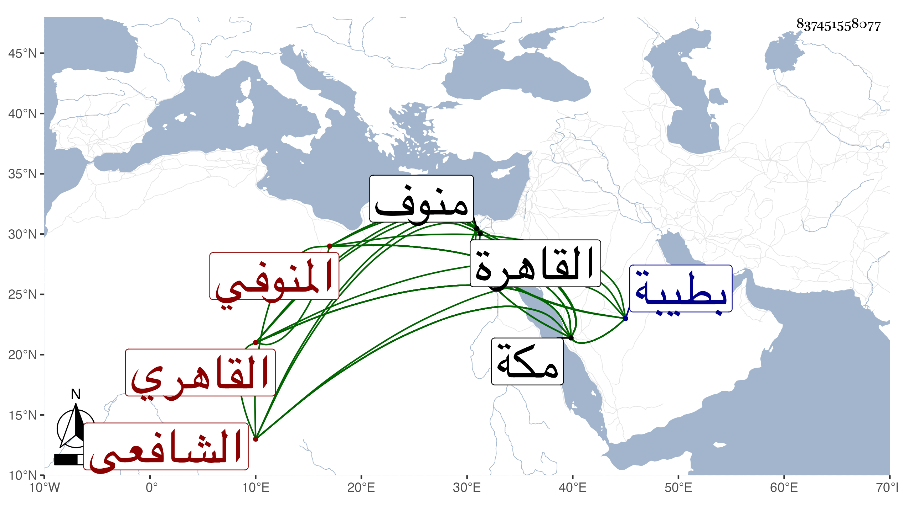

0902Sakhawi.DawLamic.ITO20230111-ara1.EIS1600.837451558077
Biography ID: 837451558077
1030
علي بن محمد بن عبد الرحمن المنوفي ثم القاهري الشافعي نزيل مكة وشيخ رباط ربيع ويعرف بين أهل بلده بابن مصاص بمهملتين بعد ميم مضمومة مخففا . ولد في شعبان سنة اثنتين وأربعين بمنوف ثم تحول منها وهو صغير فنزل الأزهر وغيره وحفظ القرآن والبهجة وألفية النحو ثم بمكة التلخيص وجود القرآن بها على عمر النجار وتفهم البهجة على ابن الفالاتي وفي الألفية على ابني أبي شريف بل حضر دروس المناوي وغيره وسمع على الشيوخ الذين قرأ عليهم الديمي بالكاملية البخاري إلا اليسير منه وعلى الزين البوتيجي ومن كان معه بقراءتي جل ابن ماجه ومما سمعه على الزين المسلسل ولكنه لم يتسلسل له ، وخطب ببلده وبجامع الأقمر وعدة أماكن نيابة ثم هاجر بحرا إلى مكة لقضاء فرضه فوصلها في رمضان سنة سبع وستين ومعه كتب بالوصية به إلى القاضي وغيره فأنزله ابن أبي اليمن برباط السدرة ثم الخطيب أبو الفضل ببيته وأقرأ أصغر ولديه واغتبط به الخطيب بحيث أنه لما أعيدت لهما الخطابة أرسل باستنابته فيها أن لم يكن المحب ابن أخيه حاضرا ورسخت قدمه بمكة وهو يقرئ الولد المشار إليه وحضر بها دروس أمام الكاملية وغيره ثم لما توجه الولد لأبيه بالقاهرة ذهب للزيارة النبوية فدام بطيبة سنة وحضر بها دروس صالحها الشهاب الأبشيطي وعاد فتصدى لإقراء الأبناء بالمسجد الحرام بل استقر في مشيخة رباط ربيع في سنة اثنتين وثمانين بعد موت إبراهيم بن مفلس الزبيدي وهو في غضون ذلك يحضر دروس البرهاني وأخيه الخطيب في الفقه وأصوله وغيرهما وربما يرغب إليه في غسل الأموات مع تبرمه من ذلك ، وتكسب بالشهادة ثم اقتصر عليها رفيقا لزائد معرضا عن إقراء الأبناء ، وهو إنسان خير لون واحد والغالب عليه السذاجة والغفلة وصلاحه مستفيض نفع الله به .
